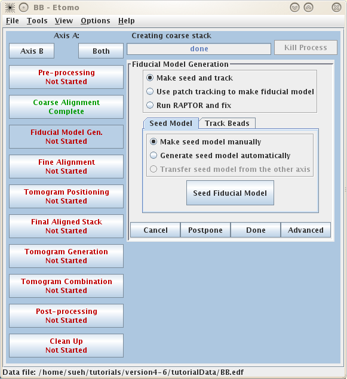
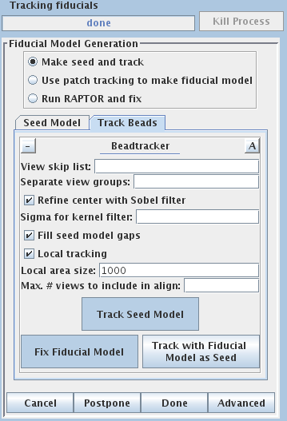
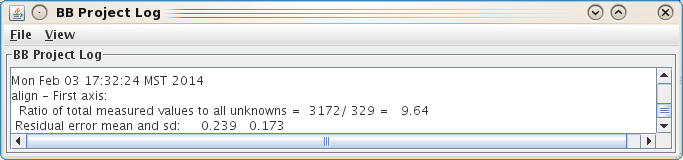
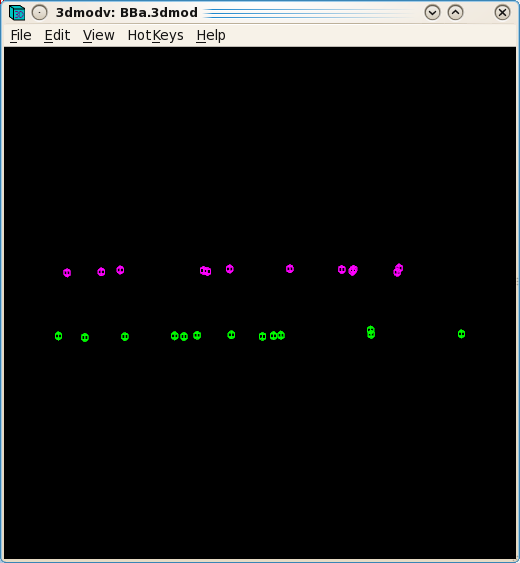
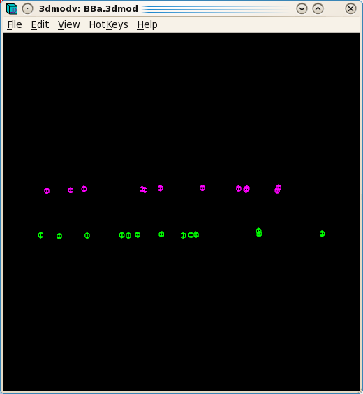
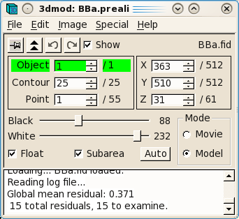
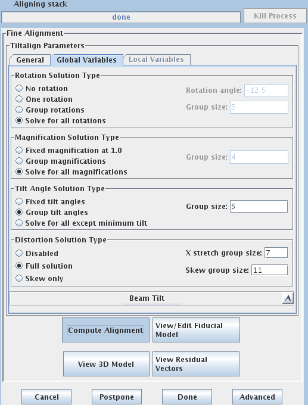
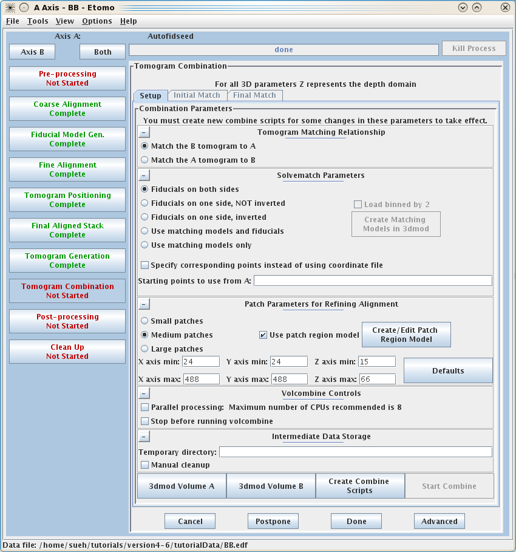
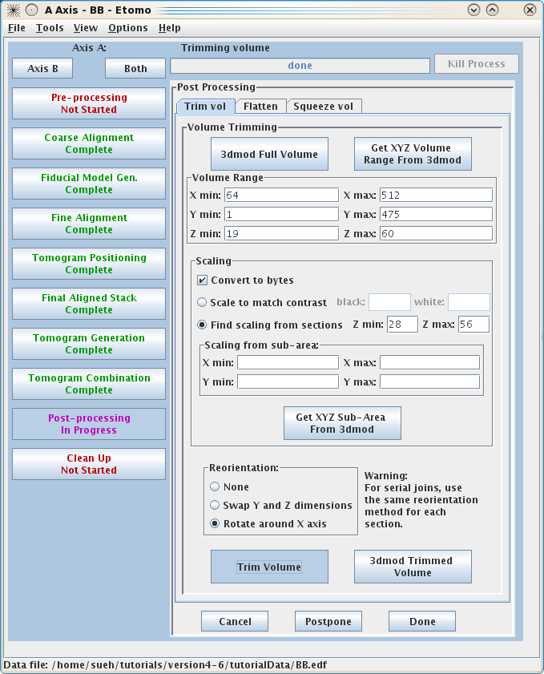

I.
Initial set up and viewing the raw tilt series:
This tutorial contains a small, dual-axis sample data set and a
step-by-step guide to eTomo. The tutorial is not meant to be a
replacement for the Tomography Guide. Please refer to the more
comprehensive Tomography Guide for
additional detail about each step. The sample data set was chosen
because you should get through the entire process with no problems! The
Tomography Guide is a good reference for trouble shooting and learning
more about the many programs that are used for computing dual-axis
tomograms.
To get started, download the sample data set from our web site. Unpack the data by typing:
tar -xzf tutorialData.tar.gz
or, on an SGI, you will probably need two steps:
gunzip tutorialData.tar.gz
tar -xf tutorialData.tar
This will create a directory, tutorialData, containing
the two raw stacks needed to start the tutorial, named BBa.st and
BBb.st, respectively. There is also a
subdirectory, finalFiles, containing all of the small working
files left after completing the data set, as well a copy of the final
reconstruction.
The file names reflect a convention that you will have to follow with
your own data sets: the raw stacks have the extension .st and dual axis
stacks have a common name then end in a.st and b.st.
It is useful to look at the raw tilt series files in order to make decisions about preprocessing steps or to see if there are any particular views that have poor image quality, and that you want to exclude from the alignment and reconstruction.
To determine if you have views that have poor image quality (poor focus, etc.), read in the raw stack(s) by typing:
3dmod BBa.st
Movie through the raw tilt series images by
clicking the middle mouse button. Notice how the images jump around
slightly. Make note of any particular views that you want to exclude
from the alignment and reconstruction. In this sample data set, there
are no images that need to be excluded.
If images were collected on the microscope using a CCD camera, random x-rays hitting the CCD camera during collection of dark reference or individual images can cause extreme high or low pixel values in your data file. As a result, these extreme values ruin the contrast and can cause artifacts in the reconstruction. The example in this tutorial does not have extreme pixel values. However, a quick way to determine if your file does have extreme pixel values is to look at the Minimum and Maximum Density values in image header of the raw stack. To do this type:
header BBa.st
If the minimum density value is a negative number or 0, then you probably have an extreme black pixel in your data set, caused by an x-ray event during collection of the dark reference. If you have a high maximum density, then you have an extreme white pixel in your data set. If an extreme value is lurking somewhere in the data set and a preprocessing step is needed to remove them, please refer to the Pre-Processing: Removing X-Rays section of the Tomography Guide.
II. eTomo Setup
To start eTomo, type:
etomo
When eTomo is first started, a Setup Tomogram panel
will come up (shown above). At this point you can either set up
processing of a new data set or open an existing data set under the File
menu.
To start working on a new data set, the following fields must be filled
out. The Dataset name is the name of the file containing the
raw, tilt series (or the root name if a dual axis data set was
collected). You can enter the Dataset name by clicking
on the yellow file selection associated with the Dataset name
field, or type in the directory path and file name directly in the
field. The Backup directory is an optional field to save small
working files every time you run a procedure. This field can be left
empty if you don't wish to use a backup directory.
Select whether the data set is Single axis or Dual axis.
The Montage option is available for processing montaged tilt
series.
The next fields specify pixel size (nm), the size of gold fiducials
(nm) and Image rotation (degrees). Pixel size (in
nm) is dependent on the microscope, camera, and magnification. The
Image rotation (tilt axis angle from vertical, in degrees)
will
also vary based on the microscope and magnification. Pressing the Scan
Header button will retrieve the Pixel size and Image
rotation values if these are specified in the MRC file
header. For this tutorial example, press Scan Header to define
the
pixel size for this data set (2.02) and Image rotation (-12.5). You
must
specify the size of the gold Fiducial marker diameter (10 nm).
If the Parallel Processing checkbox is enabled, uncheck it so
that your screen will look the same as the ones shown here. Parallel
processing, which is not covered in this tutorial, allows some
processes to be distributed across multiple computers or to multiple
processors on one computer.
Leave the Image distortion field file
entry blank. This feature can be used to correct for nonlinear
image distortions if they have been measured and characterized, which
is particularly useful with data from an energy filter.
Specify the source of the tilt angles for either
one or both axes, as appropriate in the Axis A and, if necessary, the Axis B box(es). In this example, tilt angles are
stored in the extended header and so the default Extract tilt angles from data
should be used. You can also optionally specify individual projections
to exclude from processing steps. The syntax for this exclude
list
is a comma separated list of ranges (i.e. 1,4-5,60-70). Notice
that there is a also a button in this section to open the raw data file
for viewing in 3dmod.

Details specific for the tutorial sample data set are shown above. For
this sample data set, the Dataset name
is BBa.st, it is a dual axis set. The pixel size is 2.02 nm, the
fiducial diameter is 10 nm and the image rotation is -12.5 degrees.
Tilt angles for this data set are stored and extracted from the data
file.
Press the Create Com Scripts
button to move on to generating the tomograms.
III. eTomo Main Window
The Main Window consists of several areas: on the
left is a column of buttons (Process Control Buttons) that allow you to
select a particular stage of tomogram computation to work on. On the
top is a Process Monitor that informs you of the status of the
current process or the last process completed. To the left of the Process Monitor are the Axis Buttons which allow you to move between Axis A and Axis B. The Main Window is currently open to Axis A

The Process Control Buttons are arranged in the suggested order of
processing from top to bottom. The buttons are color coded to
signify the stage of the process, where red indicates that the
process has not been started, magenta indicates that the process is
currently in progress, and green indicates that the process has been
completed. When one of the buttons is selected, the right side of the
window will fill in with information and fields associated with a
specific process. These forms are referred to as Process Panels. They allow you to modify the necessary parameters and execute
specific programs required by that processing step. The
parameters
and buttons on each Process Panel are typically laid out from top to
bottom in the order they should be executed, much like a flow chart. When you execute a process (by pressing a button on one of the
Process Panels) the Process Monitor will indicate what the process is
doing and when it is complete.
IV. Pre-Processing
If images were collected on the microscope using a CCD
camera, random x-rays hitting the CCD camera during collection of
images
or even in the initial dark reference can cause extreme high or low
pixel values in your data file. As a result, these extreme values ruin
the contrast and can cause artifacts in the reconstruction.
V. Coarse alignment.
Press the Coarse Alignment Process Control Button to proceed with creating a coarse-aligned stack.

Pressing the Calculate Cross-Correlation
button runs the program, Tiltxcorr. The program uses cross-correlation
to find an initial translational alignment between successive
images of a tilt series (i.e. just shifts in x and y). The output
file, BBa.prexf, contains a list of transforms (or recommended shifts)
that will be applied to the image data in the next step.
Pressing the Generate Coarse Aligned Stack button will run 2
programs. Xftoxg takes the transforms
created by Tiltxcorr to obtain a single consistent, or ‘global’ set of
alignments. These new transforms are then applied to the image data
using the program Newstack. The output file created is
BBa.preali. One can view the prealigned stack by pressing the View
Aligned Stack in 3dmod button. Large image shifts can be edited
manually using the the interactive program, Midas. This is not an issue
with this data set; see the COARSE
ALIGNMENT section of the Tomography Guide for details. The Tilt axis rotation entry is used if
Midas is run, because Midas will rotate images so that the tilt axis is
vertical. The Fiducialless
alignment check box can be selected for making a tomogram
without a fiducial alignment; see Making a Quick Tomogram
with Correlation Alignment in the Tomography Guide for
details. Once you are
satisfied with the prealigned stack, press the Done button to
proceed to the next step.
VI. Creating a
fiducial model based on the position of gold particles.

Press the 'Seed Fiducial Model'
button.
This will open BBa.preali in 3dmod and create an empty model file named BBa.seed. It will also bring up the Bead Fixer dialog box in Make seed mode with Autocenter checked.
Go to section 31 by pressing the Insert key on your keyboard (this will go directly to the middle section, which is often the 0° tilt).

In the Zap (image) window, place a model point in the center of 20-40 gold particles by centering the cursor in the middle of the gold particle and pressing the middle mouse button. With each new gold bead selected, hit the ‘n’ key on the keyboard. This creates a new contour for each new gold bead. Because Autocenter is checked, 3dmod should make sure that the model point is positioned in the center of the gold bead. In my example (BBa.seed) I selected 25 gold particles; the model contains 1 object, 24 contours, with each contour having 1 point. Save this ‘seed’ model by going to File -> Save model, or by hitting the hot key 's'. The model is referred to as a ‘seed’ because it contains model points on only one section. The next step uses this model as a seed from which a complete fiducial model is built.
Press the 'Track Fiducial Seed Model' process
button.

This will run the Beadtrack program to find the gold on all other sections. The output file created by tracka.com is BBa.fid, which is the completed fiducial model. This computer-generated model is not perfect, and so the next procedure involves an iterative process to edit this fiducial model.
Press the 'Fix Fiducial Model' process
button.

This procedure will open the prealigned stack (BBa.preali) and the
fiducial model file (BBa.fid) in 3dmod.
The Bead Fixer dialog box will come up in Fill gaps mode. The Bead Fixer facilitates
editing the fiducial
model.
Hit ‘Go to Next Gap’ by clicking on the button using the left
mouse button, or by using the spacebar as a hot key. This will
attach to a point (highlighted with a yellow circle) that has a missing
model point on an adjacent section. Use the Page Up or Page Down key to
find the section with the missing point and use the middle mouse button
to add the point in the center of the gold particle. It is useful to
increase the magnification of the image with the ‘+’ key and adjust the
contrast on the sections, especially at high tilt. Repeat ‘Go
to Next Gap’ until the message, ‘no more gaps are found’ comes up in
the main 3dmod window. Save the model file, and hit the Done button to advance to the fine
alignment step.
VII. Alignment
of serial tilts
The Fine Alignment panel is
organized with a set of three tabs to solve for various alignment
parameters. A general alignment is first done by pressing the Compute
alignment button at the bottom of the Fine Alignment box.

This command file runs the program, Tiltalign, to solve for the
displacements, rotations, tilts and magnification differences in the
tilted views. The program uses the position of the gold particles in
the fiducial model and a variable metric minimization approach to find
the best fit. It creates a log file that gives a synopsis of what was
done. To access this log file, right click the mouse cursor over
the window region associated with the process. This will open a menu
that is split into three sections: the first section will allow you to
open the log files associated with the current process, the second
section will allow you to open up the man pages associated with the
current processes, and the final menu section opens the general help
guides. Select "Align axis:a log file" to open the log file.
The Errors tab contains a mean
residual error and standard deviation and the ratio of measured values
to total unknowns.
In my example, the first Compute
Alignment run gave a Residual error mean of 0.375

The goal of the fine alignment step is to reduce
the Residual error mean to 0.2- 0.5.
The Tiltalign program also creates two model files that provide useful
information about the fiducial model. The
first (BBa.3dmod) displays a 3-D model of
the fiducials
 

You should see a nice distribution of pink and green spheres across the
field of view. Rotate the model to view edge-on by holding down the
number 8 key on the keypad. You will see the separation of the two
surfaces with this view. Avoid using models that have a cluster of
fiducials in any one particular region because this will skew the
alignment. Close the 3dmodv window.
The second model Tiltalign produces is a residual vector model.
Press the 'View Residual Vectors' button at the bottom of
the Fine Alignment box. This will open the prealigned stack in
3dmod and display the residual vector model on each section.

The model will show the current model point as a red X, and the
position of the residual as a green X. This residual displacement is
expanded by a factor of 10 in order to distinguish it from the actual
model point, because displacements are often very small (< 2
pixels). In large (>2k x 2k) images the residual model will often
show large displacements in one area but not in other areas. In these
cases, the residual model helps to make decisions if local alignments
are needed. In this example, local alignments are not needed. It is
common to have larger residuals at the higher extreme tilts. Leave
3dmod open for the next several steps and press the 'View/Edit Fiducial Model' button to
reload the fiducial model for editing. This will bring up the Bead Fixer dialog box in Fix big residuals mode and load the aligna.log file.
The following iterative steps involve fixing fiducial points with large residuals.


Click ‘Go to Next Big Residual’ in
the Bead Fixer dialog box.
The model point that had the big residual will
have a red arrow pointing in the direction of the recommended move.
You’ll probably be able to see that the model point is not centered
properly on the gold. If you
click ‘Move Point by Residual’ in the Bead Fixer dialog
box,
it will move the model point by the recommended amount. This works
most of the time, but if the recommendation looks wrong, you can move
it
by hand by centering the cursor over the middle of the gold bead and
then clicking the right mouse button.


Repeat selecting ‘Go to Next Big Residual’
and ‘Move Point by Residual’ until no residuals are found. The
hot key ' will cycle to the next residual and the hot key ;
will move point by residual. Save the model file and leave the file
open.
Access the aligna.log file and go to the Surface Angles tab.

Note the Total tilt angle change near the bottom (in
my example,
this value was -0.04). Put this value in the Fine Alignment Volume Position Parameters
box under Total tilt angle offset.
Press the Compute Alignment button again, then select ‘Reread log
file’ in the Bead Fixer dialog window. Proceed in fixing model points
with large residuals. Save the model.
If your data set has a good distribution of gold on both surfaces, you can solve for distortion. Press the 'Global Variables' tab in the Fine Alignment box:

Select the 'Full solution' option
in the Distortion Solution Type
area at the bottom of the panel. This will activate solving for two
types of distortion: X-axis stretch and Skew. Keep the default group
size and hit the 'Compute Alignment'
button to run the alignment. 3dmod will re-read the log file when Compute Alignment is done.
Return to the 3dmod windows and repeat fixing the new residuals that
Tiltalign
came up with after solving for distortion. Then press the Save & Run Tiltalign button in
the Bead Fixer window to save the model and compute the
alignment. You can use this button to avoid having to go back to
eTomo, as long as you haven't changed any parameters in eTomo. After a
few runs of running the alignment and
checking model points in 3dmod, the final mean residual should come
down to 0.2-0.4. In my example, the final Residual error
mean was 0.321.

VIII. Sampling the data set to create 3 small reconstructions
The goal of the next step is to shift and rotate
your reconstruction so that it is as flat as possible and will fit into
the smallest volume. This is done by sampling three regions of the
tomogram, ones computed from near the top, middle, and bottom of the
tilt images. (When these samples are not adequate, you can do this
instead with a whole, binned down tomogram; see Positioning with
a Whole Tomogram in the Tomography Guide for details.) There
are two rotations which can be adjusted: the
rotation about the tilt axis, to make the section level when viewed in
the X-Z plane; and a rotation about the X axis, to make the section
come out at the same Z height throughout the length of the tomogram.
Increase the Sample tomogram thickness to 200. This will create a
reconstruction that is much thicker than the original section.
Press Create Sample Tomograms

This command file first extracts and aligns a 60 pixel sliver from the top, middle, and bottom of the image stack. The program then uses these samples to create 10 slices of the reconstruction from the top, middle, and bottom of the aligned stack. These output files are named topa.rec, mida.rec, bota.rec. Press Create Boundary Models
This step involves creating a model to
define the top and bottom surfaces of each reconstruction.
When the 'Create
Boundary Models' is pressed, 3dmod will read in all three
reconstructions at once, with the topa.rec displayed first and viewed
edge on. 3dmod will also start with an empty model, named
tomopitcha.mod.
The top bar of the Zap window has a feature ‘4th D’ and a
backward and forward arrow. If you click the forward arrow, you can
cycle through to the mida.rec and bota.rec reconstructions,
respectively. Start with the topa.rec. Use the contrast sliders to
adjust contrast. Notice the material in the center of the volume
with a mottled appearance. This is the part of the reconstruction with
biological material. Using the middle mouse button, place one
model point at the left side of the top surface that defines the region
containing the biological material, and a second model point at the
right side of the top surface. A line will connect the two points. Model the bottom surface of the section with
2 points on the left and right sides, respectively. Toggle to the
mid.rec and bot.rec file by hitting the arrow button to the right of ‘4th
D’ at the top of the zap window. Repeat modeling the top and bottom
surfaces of the other two reconstructions. The final model should have 1 object and 6
contours, and each contour should have 2 model points. Save this
model file.
I generally make the thickness of the final tomogram ~20 pixels greater then the tomopitch result. To do this, add ~7 pixels to Added border thickness.
Press 'Compute Z Shift and Pitch Angles'
Based on these model contours,
tomopitch determines parameters to make the reconstruction as flat as
possible and to fit in the smallest volume as possible. This command
file creates an output file ‘tomopitcha.log’. This log
file will automatically open after the program is finished.

IX. The final runs to create the full-size tomogram
Right click on the Tomogram Positioning dialog and open the Tomopitch log file. An example of the tomopitcha.log from my example is shown
below:

The bottom of the log file contains information calculated from all three positions. These offsets are automatically added to the existing Angle offset, Z shift and X axis tilt values. The Added values correspond to the values mentioned in the fifth paragraph in the tomopitch log ("Pitch betwen samples can be corrected...") and must be added to the existing values and entered by the user if eTomo doesn't enter them (Look for the "added X-axis tilt", "total angle offset", and "added Z shift"). The Final tomogram thickness is also entered by eTomo from the tomopitch log.
Press the Create Final Alignment button.
After the final alignment transforms are created, press the Done button to advance to the next
step.

Press 'Create Full Aligned Stack'
This
command will apply the alignment transforms to the full-sized image for
the final, aligned stack. The output file is named BBa.ali
The full aligned stack may be
viewed by pressing View Full Aligned
Stack, although this is not necessary. There are
optional steps for CTF correction, erasing fiducials, filtering the aligned stack, which are also not needed
here. press the Done button to advance to the next
step.

Press 'Generate Tomogram'
When the tomogram is computed, examine it by
pressing View Tomogram in 3dmod.
You may also choose to Delete Aligned
Image Stacks at this point to save space.
Movie through the reconstruction by hitting the middle mouse button to
step through serial, tomographic slices from the top surface of the
tomogram to the bottom surface.
X. On to the second axis (Axis B):
To see the B Axis, press the Axis B button at the top of the Etomo window. This will bring up another set of process buttons which can be used to perform the operations for aligning the Axis B tilt series and calculating the tomogram. To prevent confusion, Axis A has a blue background and Axis B has a green background.
On the right-hand side of the eTomo main window are the process buttons
to perform the operations for aligning the Axis B tilt series
and
calculating the tomogram. Again, the Pre-processing step is not
required
for this sample data set. Go to the Coarse Alignment steps, as
described above for Axis A.


After the coarse-aligned stack has been
generated, press Done to
advance
to the next step.
In order to combine both tilt axes at
least some (8-10) of the beads that you track must be the same in the
two series. To accomplish this, use the program Transferfid.
Press 'Transfer Fiducials From Other Axis'
Pressing the Transfer Fiducials From Other Axis
button will run the shell script, Transferfid, that creates a seed model for the second axis based on the fiducial model from the
first axis. The program will search for
the pair of views in the two series that correspond the best, then
transfer the fiducials from the first series to make the seed model for
the second series. At the end, the program indicates how corresponding
fiducials should be specified when setting up to combine the tomograms
and this information is stored in the transferfid.log file. The log
file from my example is:
The transferfid log file will list the fiducial correspondence between the first and second axes. Do not worry if a few fiducials failed to transfer. In this example, all 25 fiducials correspond:
Points in A:
1-25
Points
in B: 1-25
The output file of transferfid
is the seed model for the second axis. In this example, the model is
named BBb.seed. Proceed to Track
Fiducial Seed Model in the Axis B window.

This will automatically track the fiducials for the ‘B’ set. Fix the gaps in the BBb.fid file by pressing the Fix Fiducial Model Using Bead Fixer as outlined above for the A axis. When all gaps are found, press Done to proceed to the Fine Alignment and Tomogram calculation steps.
You will now proceed with the same steps following the same procedure as outlined above for the Axis A set. Briefly:
Press 'Compute Alignment' for General and Global variable tabs in the Fine Alignment box.
At this point, you will start the iterative alignment procedure as you did for the ‘A’ set by editing model points with large residuals, saving the model, and computing the alignment. When the alignment is complete, press Done and proceed with the tomogram generation steps.
Proceed with 'Tomogram Positioning' as outlined above for the A Axis.
Proceed with 'Tomogram Generation' steps as outlined above for the A Axis.
XI. Combining the two axes

Go back to the A Axis by pressing the Axis A button.
To combine the two tomograms press the Tomogram Combination process button.

Tomogram Combination Panel
The Tomogram
Combination Panel is organized with 3 tabs: Setup, Initial Match, and Final Match.
The Setup window is where
information is given about the particular data set. The first section
describes the Tomogram Matching
Relationship. It is most common to match the B tomogram to A.
The Solvematch Parameters
box asks for information on the fiducial marker distribution. In this
example, fiducials are on both sides. For this data set, the programs
will no trouble fitting to all of the points at once,
so it is not necessary to fill out Starting points to use from A.
The next section contains information for Patch Parameters for Refining the Alignment using local 3D cross-correlations. Select Small patches. Selecting Medium patches works well for most data sets, but this data set has been binned to reduce its size. When specifying the limits of the volume from which the patches will be extracted, it is important to look at the tomogram being matched to. Using the entire Z axis range will almost never work, and even for the X and Y axes it may not be good to use the defaults. To find the limits, press the 3dmod Volume A button at the bottom of the panel. This will open BBa.rec in 3dmod. Step through the images and decide what range of the X axis, Y axis and Z axis contains useful information for matching up the volumes. In this example, defaults were kept for the X and Y axis.
In this example Z axis min and Z axis max where set to the first and last slices where about half the material in the slice is not blurry (23 and 76).


Sometimes, this will not eliminate “extraneous” material to allow the two axes to combine. In that case, you have to make a patch region model. To make a patch region model, check the box "Use patch region model file" and press the Create/Edit Patch Region Model button to open up the axis that is being matched to. In model mode, trace closed contours around the areas that contain biological material. Do this every 10 slices or so in the tomogram. Save the model, which is named patch_region.mod. Creating the patch region model is particularly useful when reconstructing data sets that have large amounts of resin or open areas in the images. This example data set does not need a patch region model.
When the parameters for the Setup
panel have been entered, press Create
Combine Scripts to create a series of command files that
will run various programs in the combine procedure. Press Start Combine to begin the process
of dual-axis tomogram combination. eTomo will automatically
advance to the Initial Match and
finally the Final Match tabs
as
various programs are being run.
After tomogram combination is complete, press Open Combined Volume to view the
final tomogram. Press Done to
advance to the final steps.
XII. Post-Processing and Clean-up of intermediate files.
Post-processing involves a volume trimming and byte scaling step, followed by deletion of intermediate files. There is also an option to create a squeezed down volume, which is useful when working with very large data sets, particularly when reconstructing serial sections.

The final reconstruction of the two axes combined into one will always be called sum.rec. Open the sum.rec reconstruction by pressing 3dmod Full Volume. Step through the reconstruction and determine the X,Y and Z ranges for the final volume. A convenient way to set the X and Y range is to turn on the rubberband with the dashed rectangle in the toolbar of the Zap window, press the left mouse button over the upper left corner of the desired area, and drag the mouse to the lower right corner. Z can also be set, if desired; press Lo to set the minimum Z and Hi to set the maximum Z. When you press Get XY Volume Range from 3dmod, eTomo will retrieve the X and Y values of the rubberband (and Z values if they are set) from 3dmod. In this example, the default ranges for X and Y are used. The Z axis (in the flipped tomogram) range has been set from a Z min of 22 to a Z max of 75 to exclude non-cellular material. Finally a scaling range is set to find the range of slices that exclude the gold beads. In this example, the scaling is section based and has a range between slices 32 and 64 (see below to enter these numbers using 3dmod).
Sometimes it is not possible to find a range of slices that contain no gold. For example, the sample used here contains some gold particles on the plastic resin outside the cell that show up in the same slices that we would like to use for scaling. Limiting the X and Y scaling range to exclude any such gold particles will improve the contrast of the final tomogram. Press the 3dmod Full Volume button and bring up the ZaP Window. Go to a slice which shows gold particles and put a rubberband around an area that excludes them. To do this, press the rubberband toggle to the left of the Z slider.

Press the left mouse button over the upper left corner of the desired area, and drag the mouse to the lower right corner. Then move the Z slider to lower part of the scaling range (32) and press Lo. Move the Z slider to the upper part of the scaling range (64) and press Hi.

Go to the Scaling box in eTomo and press the Get XY Sub-Area From 3dmod button. This will cause the eTomo to retrieve X and Y values you selected. Press the Trim Volume button to run Trimvol. Trimvol is a single tool for trimming a volume and converting it to bytes. Finally, view the final, trimmed volume (named BB.rec) by pressing 3dmod Trimmed Volume. Press Done to proceed to file cleanup.
Cleanup of intermediate files: